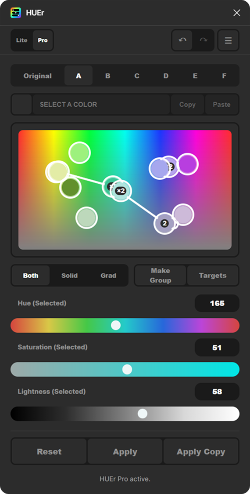
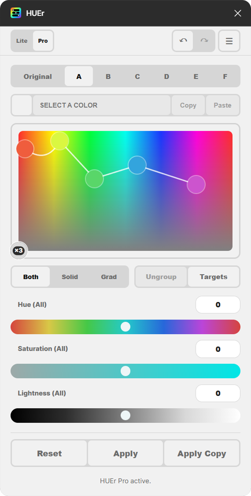

Every color.
One map.
HUEr shows the fills, strokes and gradient stops of the layers you select as dots on one live color map. Drag them, group them, compare directions, and apply the result when it feels right.


Quick start
- Select one or more layers in Figma, then open HUEr from Plugins.
- Move the Hue, Saturation and Lightness sliders to adjust every color at once.
- Click a dot on the map to work on that color alone. Drag it to change hue and saturation; hold Ctrl while dragging to change lightness.
- Try a few directions with the A–F variations, and compare with Original.
- Press Apply to keep the colors, or Apply Copy to keep them on a copy of the layers.
The panel, top to bottom
- Header: HUEr's own Undo and Redo, and the ☰ settings button.
- Original, A–F: the untouched colors, and six editable variations.
- Exact color: the selected color's HEX value, with Copy and Paste.
- Color map: every color in your selection as a dot.
- Both / Solid / Grad, Make Group, Targets: choose which paints to edit, group colors, and open Saved Targets.
- Hue, Saturation, Lightness: adjust everything, or only what is selected.
- Reset, Apply, Apply Copy: undo the current adjustment, or commit your colors.
The color map
Hue runs left to right, and saturation runs from vivid at the top to grey at the bottom. Each dot is a color from your selection, sitting at its own hue and saturation.
- Click a dot to select it. Clicking never moves it; dragging starts only after you move a few pixels.
- Drag a dot to recolor it. Every layer that uses that color follows.
- Hover a dot to highlight the layers that use it in Figma.
- Click empty space in the panel to go back to adjusting everything.
- A number inside a dot shows how many colors or uses it holds.
Hue wraps around the edges of the map; saturation and lightness stop safely at 0 and 100.
Whites, greys and blacks have no hue of their own, so HUEr spreads them along the bottom of the map by lightness, dark on the left and light on the right. Adding saturation to one tints it toward the hue where its dot sits.
Stacks and groups
- Stacks: colors that are the same or close enough share one dot with a count, such as ×3, so they always move together.
- Drop a dot close to a similar color and it snaps onto it, joining its stack. Colors of clearly different lightness, like two greys or white and black, never snap together.
- Split breaks a selected stack into its individual uses, so you can edit them separately. Join stacks selected dots that share a color.
- Groups: select two or more dots and press Make Group to join them, however far apart they are. Moving a group keeps the differences between its colors.
- When HUEr opens, very similar colors start out sharing one dot as a group. Select it and press Ungroup to separate them.
- Ungroup removes one level at a time, so groups inside a group stay intact.
- Hover a group to preview the colors inside it.
Apart from that first look, HUEr never groups or regroups colors on its own, and your groups stay after Apply.
Selecting several colors
- Shift-click dots to add them to a selection. Selected dots move together and keep their differences.
- Drag on empty map space to draw a selection box. Hold Shift to add to the current selection.
Gradients
- Gradient stops appear as dots joined by a line, in stop order.
- Click or drag a line to select and move the two stops it joins. Shift-click more lines to add them.
- Alt-click (Option on Mac) a stop or a line to select the whole gradient; drag to move it. Add Shift to add it to the selection.
- Each stop can also be selected and adjusted on its own.
- Use Grad to show only gradient stops, Solid for solid colors, or Both.
Linear, radial, angular and diamond gradients are supported, in both fills and strokes.
Sliders and exact colors
- With nothing selected, the sliders shift every color. Saturation and Lightness are relative shifts.
- With a dot, group or selection active, the sliders show and set its actual values from 0 to 100%.
- Double-click a slider to reset just that slider: back to 0 with nothing selected, back to the selected color's original value, or, with several colors selected, back to where they were when you selected them.
- Type a number and press Enter to set it exactly.
- Type or paste a HEX value in the exact color field to set the selected color.
- Reset clears only the adjustment you are working on.
Hue modes
Choose how hue shifts behave in ☰ Settings. You can switch at any time, and switching can be undone.
Vivid Hue (default)
Classic HSL hue shifting, the way designers know it. Colors stay saturated, but brightness and contrast can change.
Best for illustration and expressive work.
Keep Contrast
Perceptual (OKLCH) shifting. Perceived brightness and text contrast stay steady as the hue changes; very bright colors may soften.
Best for recoloring UI, so text and buttons stay readable.
Variations
- Original is a read-only view of your starting colors.
- A–F are editable variations, and each remembers its own adjustments.
- Opening an empty variation starts it from the one you were on.
- Variations last while you work on the same selection. To keep them, save the layers as a Saved Target: it stores A–F as presets.
- After Apply, the applied colors become the new Original and the variations start fresh.
Apply and Apply Copy
- Apply commits the colors you see to the selected layers.
- Apply Copy duplicates the selected layers with the new colors, hides the originals with their colors unchanged, and selects the copies. Copies are named, for example, Card — HUEr A.
If you select different layers before applying, the preview is discarded and your layers go back to how they were. Clicking empty canvas keeps your work instead: HUEr shows Previous selection still active, and reselecting the same layers picks up where you left off. To keep looks for later, save them in a Saved Target.
Editing colors in Figma while HUEr is open
You can keep using Figma's own panels. Colors you change there become the new starting colors of only what you changed, and your variations and adjustments stay on top. Other edits, such as moving or adding gradient stops, rotating a gradient or changing opacity, are kept without changing any other color.
Saved Targets
A Saved Target is a named set of layers you can come back to, with your color presets.
- Open Targets and save the current selection under a name.
- Load it later to select the same layers again, even after closing and reopening Figma. Targets are stored in the file.
- A Target also saves your groups and your variations A–F as presets, with their exact colors. Loading it brings them back and opens on A, ready to keep editing. Update saves the current A–F again.
- Type a name and press the check button (or Enter) to save a new Target.
- Select a Target in the list to Delete, Update or Load it. Update replaces its layers with your current selection.
- Rename, update or delete Targets. A deleted Target can be brought back with HUEr's Undo.
- HUEr tells you how many layers were found. Deleted layers are skipped, and layers moved elsewhere in the file are reported.
Undo and redo
HUEr has its own Undo and Redo in the header. They cover color edits, grouping, hue mode switches and Saved Target deletion, and can bring back the layer selection an edit belonged to.
Settings and layout
- Theme: dark or light.
- Size: S, M or L.
- Hue mode: Vivid Hue or Keep Contrast.
- Selection: two-click safe drag (select first, then drag) or one-click fast drag.
- Gradient links: whether a selection box that crosses a gradient line also selects its stops.
- Wide layout (Pro): drag the panel's right edge to widen it. When there is room, HUEr switches to a landscape layout with the map beside the controls.
Your settings are remembered between sessions.
What HUEr edits
- Solid colors and gradient stops in fills and strokes.
- Hidden layers, layers inside hidden parents, hidden paints, and zero-opacity layers or paints are ignored.
- Image and video paints, effects and shadows are not changed.
- Color styles and variable bindings stay intact.
HUEr Lite and HUEr Pro
Lite
- The color map, with Both, Solid and Grad
- Global Hue, Saturation and Lightness, including dragging the whole map
- Live preview, Original and A, and Apply
- Both hue modes, dark and light themes, S/M/L sizes, Undo and Redo
Pro
- Edit single colors and groups; Make Group and Ungroup
- Shift-click and box selection, gradient line editing
- Hover layer highlighting
- Saved Targets with A–F presets, variations B–F and Apply Copy
- The resizable wide and landscape layout
After the trial, Pro-only areas are dimmed with a small lock, so you always know what Lite includes. Click Unlock Pro at the bottom of the panel to upgrade.
Try Pro with five free trial sessions. Each time you open HUEr, your first Pro action, such as selecting a single dot, uses one session. Pro is unlocked through Figma's own checkout and stays with your Figma account; HUEr never sees your payment details.
FAQ
Does HUEr replace color styles and variables?
No. HUEr is for exploring and adjusting the colors already used in a part of your file. Styles and variables remain the place to manage reusable system colors, and HUEr keeps them connected.
Why did my colors go back when I selected something else?
HUEr's changes are a preview until you press Apply or Apply Copy. Selecting different layers discards the preview so nothing changes by accident. If you only clicked empty canvas, reselect the same layers to continue where you left off. To keep your variations for later, save them in a Saved Target.
Which hue mode should I use?
Vivid Hue for illustration and expressive work. Keep Contrast when recoloring UI, so text and buttons stay readable.
Does Keep Contrast guarantee accessible contrast?
No. It keeps brightness and contrast much steadier through hue shifts, but you should still check important text with a contrast checker.
What is the difference between Apply and Apply Copy?
Apply changes the selected layers. Apply Copy creates recolored copies and hides the originals, so you can compare or go back.
Does HUEr send my designs anywhere?
No. HUEr has no network access; everything happens inside Figma. Purchases are handled entirely by Figma.
I bought Pro. Do I need to buy it again on another computer?
No. Pro is tied to your Figma account, so it is available wherever you sign in.
Get help
Found a bug or have an idea? Open an issue on GitHub and describe what you did, what you expected and what happened. A screenshot helps.